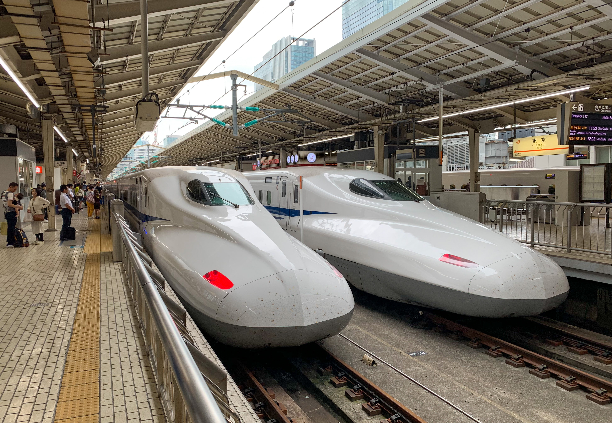

Young Travelers who want to travel to Japan to explore their diverse cultures should be familiar with the travel system in Japan. The information provided by Japan Guide states that "Japan's main islands of Honshu, Kyushu, and Hokkaido served by a network of high-speed train lines that connect Tokyo with most of the country's major cities. Japan's high-speed train is called Shinkansen. The train system is constantly operating under Japan Railways.
Young Travelers who are on a tight budget can stay in a variety of hotels, but one of the best hotels to stay in on a budget is a capsule hotel. Japan guide states that one of the best lodging options is Capsule hotels.
Capsule Hotels are located around major train stations in large cities is mostly targets individual who has a low budget for a single-night stay.
Young Travelers who want to know the fastest way to transport one city to another in a few seconds. Japan guide states that Japan has an efficient public transportation network for people who are always constantly moving around from place to place around the city.
Shinkansen (bullet train) in Japan

The information provided by Japan Guide states that, "Japan's main islands of Honshu, Kyushu and Hokkaido are served by a network of high speed train lines that connect Tokyo with most of the country's major cities. Japan's high speed train is called Shinkansen and the train is operated by Japan Railways.
Capsule Hotel in Japan
The information provided by Japan Guide states that, "One of the best lodging options is Capsule hotel because they are usually found around major train stations in large cities and target individuals for a low budget, single night's stay."
Transportation in Japan
The information provided by Japan Guide states that, "Japan has an efficient public transportation network, especially within metropolitan areas and between the large cities. Japanese public transportation is characterized by its punctuality, its transportation is best suited for large people."